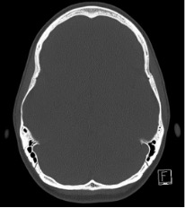
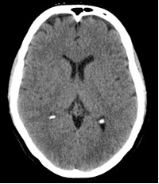

Computed Tomography

Introduction to Computed Tomography
- Overview: Computed Tomography (CT) imaging is a non-invasive diagnostic technique that uses X-ray technology to create detailed cross-sectional images of the brain and spinal structures. It is widely used in neurology to detect various conditions, such as hemorrhages, tumors, fractures, and other abnormalities.
- Process: During a CT scan, an X-ray beam rotates around the patient, capturing multiple images from different angles. These images are then combined to produce a comprehensive view of the internal structures.
- Advantages: CT scans are quick, widely available, and highly effective in detecting acute issues such as strokes and traumatic injuries.
Types of CT Scans
Standard CT Scans
- Non-Contrast CT: This is a standard CT scan performed without the use of contrast agents. It provides detailed images based solely on the natural differences in tissue densities. It is commonly used for quickly assessing acute conditions such as hemorrhages, fractures, and large tumors.
- Contrast-Enhanced CT: This scan is performed after administering an iodine-based contrast agent intravenously. The contrast agent circulates through the bloodstream and highlights vascular structures and lesions. It is useful for identifying abnormalities that affect the blood-brain barrier, such as tumors, infections, and inflammatory conditions.
Specialized CT Scans
- CT Angiography (CTA): TA involves the use of contrast agents to specifically image the blood vessels in the brain and neck. The scan captures rapid sequences to track the flow of the contrast agent through the vascular system. It is used to evaluate aneurysms, arterial stenosis, vascular malformations, and other abnormalities in the blood vessels
- Perfusion CT: This technique measures the blood flow to various regions of the brain by tracking the movement of contrast agents over time. It provides information on cerebral perfusion. Perfusion CT is critical in the assessment of stroke, helping to differentiate between salvageable brain tissue and areas of irreversible damage. It is also used to evaluate tumor vascularity and response to treatment.
How It Works
Data Acquisition:
- X-ray Production: X-rays are a form of electromagnetic radiation. In a CT scanner, they are produced by an X-ray tube that emits a controlled beam.
- Tissue Penetration: X-rays pass through the body and are absorbed at different rates by different tissues. Dense tissues like bone absorb more X-rays and appear white on the CT images, while less dense tissues like the brain absorb fewer X-rays and appear in varying shades of gray.
- Attenuation: The attenuation of X-rays refers to the reduction in their intensity as they pass through tissues. This attenuation depends on the density and composition of the tissues. Differences in attenuation allow CT imaging to distinguish between various types of tissues and identify abnormalities.
- Raw Data Collection: During the scan, the X-ray detectors capture raw data from multiple angles as the X-ray tube rotates around the patient. This raw data is used to create individual cross-sectional slices of the body.
Image Reconstruction:
- Reconstruction Algorithms:
- Filtered Back Projection (FBP): A common method where the raw data is mathematically processed to produce images. FBP is fast and effective for most routine CT imaging.
- Iterative Reconstruction: More advanced algorithms that refine the image by iteratively comparing the raw data to the reconstructed image, reducing noise and improving image quality.
- Windowing Techniques: To enhance the visibility of specific tissues and structures, CT images are often adjusted using different "windows."
- Bone Window: Optimized for viewing bone structures. This window increases the contrast of bone tissues relative to surrounding soft tissues, making fractures and bony abnormalities more visible. The bone window has a narrow window width and a high window level, which emphasizes the high attenuation of bone.
- Soft Tissue Window: Designed for better visualization of soft tissues, such as muscles, organs, and vessels. This window adjusts the image to enhance the contrast between different soft tissues. The soft tissue window has a wider window width and a lower window level compared to the bone window, making it easier to differentiate between tissues with similar densities.
- Multiplanar Reconstruction (MPR): After the initial slices are created, they can be reconstructed into different planes (e.g., coronal, sagittal) and even into 3D images to provide a more comprehensive view of complex structures.
 
Main Components of a CT Scanner:
- Gantry: The gantry is the large, circular part of the CT scanner that houses the X-ray tube and detectors. The patient lies on a motorized table that moves through the gantry. The gantry rotates around the patient to capture multiple X-ray images from different angles.
- X-ray Tube: The X-ray tube generates the X-rays by heating a filament to produce electrons, which are then accelerated and collide with a metal target, producing X-rays. It emits a controlled beam of X-rays that penetrate the body and are captured by detectors.
- Detectors: Modern CT scanners use solid-state detectors that convert X-ray photons into electrical signals. They capture the X-rays that pass through the body and convert them into digital signals for image reconstruction.
- Computer System:The computer system processes the raw data from the detectors using reconstruction algorithms to create cross-sectional images. It displays the images for interpretation by radiologists and can store the images for future reference.
Clinical Applications of CT Scanning
Brain Imaging
- Stroke: CT scans are crucial for the rapid identification of ischemic and hemorrhagic strokes.
- Detection: Non-contrast CT is typically used initially to quickly rule out hemorrhage, which is essential in determing treatment. Hemorrhagic stroke will show areas of high attenuation (hyperdense regions) on a non-contrast CT.
- Assessment: CT perfusion imaging can assess the extent of ischemic brain tissue. It helps differentiate between the ischemic penumbra (potentially salvageable tissue) and the infarct core (irreversibly damaged tissue), guiding treatment strategies such as thrombolysis or thrombectomy.
- Visualization:CT angiography (CTA) can visualize cerebral arteries and identify large vessel occlusions, which is critical for planning endovascular interventions.
- Traumatic Brain Injury (TBI):
- Detection: CT is the gold standard for detecting skull fractures, brain contusions, hemorrhages (such as epidural, subdural, and intracerebral hemorrhages), and edema following head trauma. It is preferred due to its speed and ability to quickly identify life-threatening conditions.
- Monitoring: CT is used to monitor patients for potential complications such as increasing intracranial pressure or delayed hemorrhage. Repeated CT scans may be necessary to assess changes over time or the evolution of the injury.
- Tumors:
- Detection: Contrast-enhanced CT helps identify brain tumors by enhancing the visibility of the tumors and delineating their size, location, and relationship to surrounding structures. Tumors typically show up as areas of enhanced contrast due to their vascularity and disruption of the blood-brain barrier.
- Guidance: CT is used to guide biopsies and plan surgical interventions by providing detailed information about the tumor's anatomy and its interaction with nearby structures.
Spinal Imaging
- Spinal Trauma:
- Detection: CT is essential for diagnosing spinal fractures, dislocations, and other traumatic injuries to the spine. It provides clear images of bony structures and can reveal fractures, subluxations, and damage to spinal ligaments.
- Assessment: It helps in assessing the extent of spinal injury and identifying any associated complications, such as hemorrhage or spinal cord compression.
- Spinal Degenerative Diseases:
- Detection: CT scans are useful for evaluating degenerative changes in the spine, such as disc herniations, spinal stenosis, and osteophyte formation. They help visualize bony structures and can assist in diagnosing conditions that may not be visible on plain X-rays.
- Guidance: CT is used to guide procedures such as spinal injections or minimally invasive surgeries. It provides detailed images of the bony anatomy and helps in precise placement of needles or other instruments.
- Spinal Tumors:
- Detection: Contrast-enhanced CT is used to identify spinal tumors and assess their extent. It helps in differentiating between primary spinal tumors and metastatic lesions, and in evaluating their impact on surrounding structures, such as the spinal cord and nerve roots.
- Guidance: CT can assist in surgical planning by providing detailed anatomical information about the tumor’s location and its relationship to critical structures, facilitating accurate resection or biopsy.
- Post-Surgical Monitoring:
- Detection: After spinal surgery, CT is used to monitor the surgical site for complications such as hardware failure, infections, or residual disease. It helps in assessing the alignment of spinal implants and evaluating the healing process.